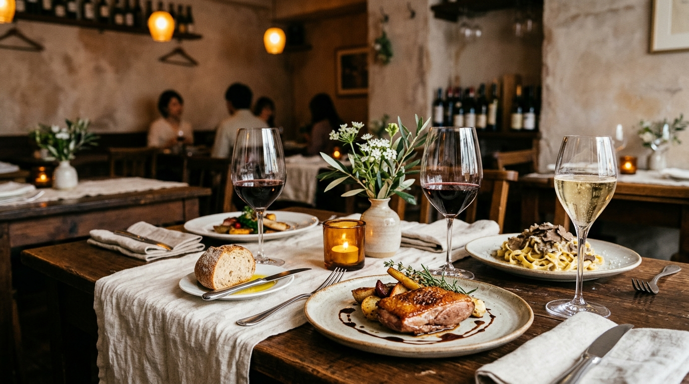
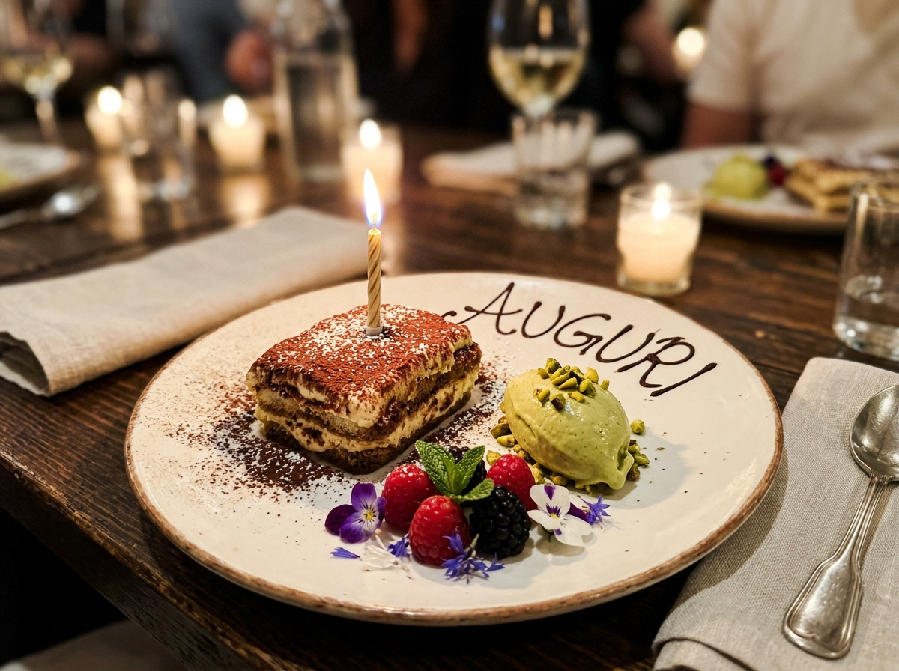
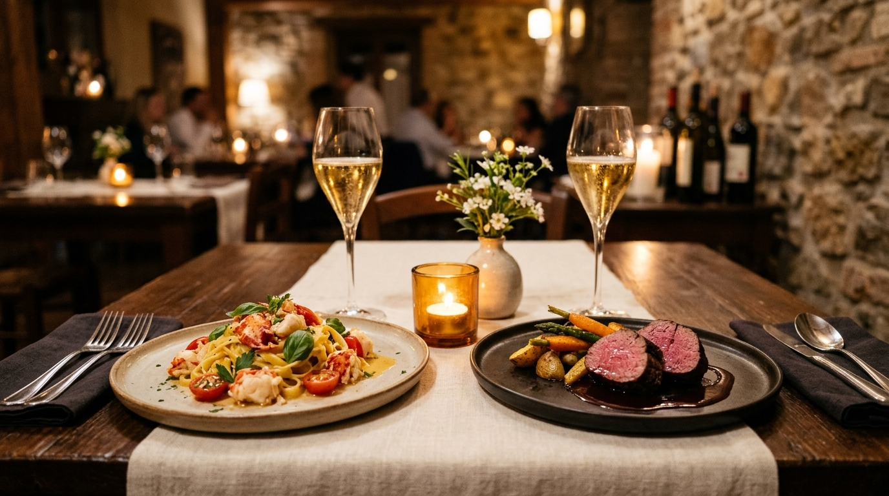
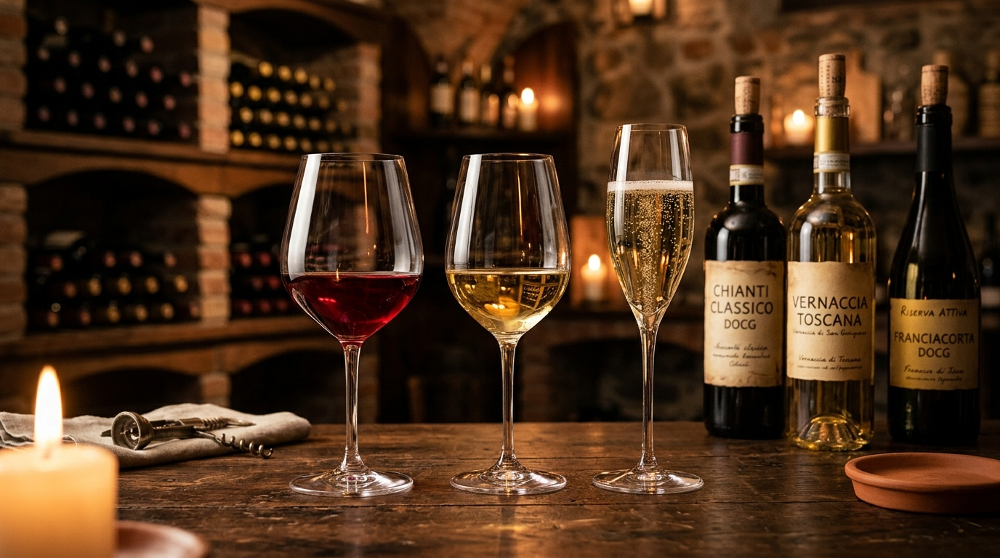
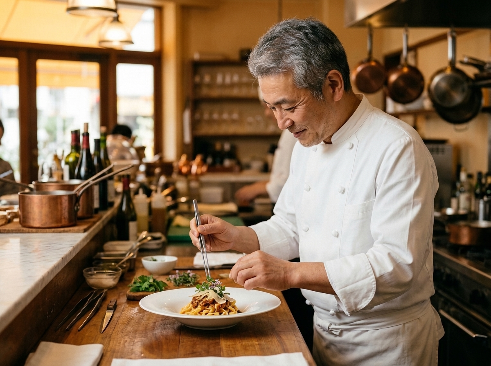
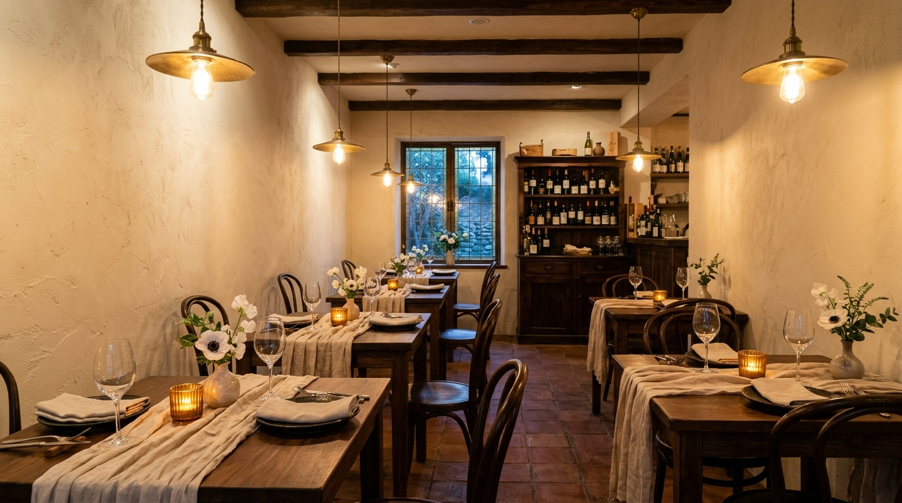

祝福のために仕立てる「記念日特別コース」
乾杯のスパークリングワイン（ノンアルコールへ変更無料）から始まり、オマール海老の手打ちパスタや黒毛和牛の炭火焼きまで。旬の贅沢を織り込んだ全7皿のフルコースをご用意しています。

Trattoria SOLE
誕生日も、記念日も、大切な人と過ごすかけがえのない時間を。
大切な人の笑顔が見たい日。いつもより少し贅沢に過ごしたい日。Trattoria SOLEが、料理とワインでそのひとときを彩ります。


乾杯のスパークリングワイン（ノンアルコールへ変更無料）から始まり、オマール海老の手打ちパスタや黒毛和牛の炭火焼きまで。旬の贅沢を織り込んだ全7皿のフルコースをご用意しています。
店内中が注目するような派手な演出ではなく、お二人の会話が温まったタイミングで、キャンドルを添えた美しいドルチェプレートをさりげなくテーブルへお届けします。ご希望に応じてお写真撮影も自然にお手伝いいたします。
パティシエが一皿ずつ丁寧にメッセージをお入れします。お誕生日、結婚記念日、プロポーズ、日頃の感謝まで、お好きな言葉をご予約時にお知らせください。
※花束のお預かりや、プレートをお出しするタイミングのご相談も予約フォームから承っております。
お相手様に気づかれない事前相談や、苦手食材のご変更も細やかにサポートいたします。
旬の味わいを少しずつ贅沢にお楽しみいただけるコースをご用意しております。
アレルギーや苦手な食材がございましたら、お一人様ずつ別メニューへご変更いたします。
全7品＋2大特典｜誕生日・結婚記念日・プロポーズの特別な夜に
コースに含まれる「記念日2大特典」
全5品｜お昼の記念日や、少し贅沢な週末ランチに
全6品｜旬の食材と手打ちパスタを堪能する定番ディナー

イタリア全20州の造り手から厳選した、常時80種類以上のワインを取り揃えております。
華やかな乾杯のフランチャコルタ（伊産スパークリング）から、余韻の長いバローロ、海風を感じる白ワインまで。グラスワインも毎日8〜10種類ご用意しております。
「お肉に合う重めの赤を」「すっきり飲みやすい白を」など、銘柄に詳しくなくてもどうぞ気軽にお声がけください。
お酒を控えたい方や大切なお相手様にも同じテーブルで乾杯の喜びを分かち合っていただけるよう、ぶどう本来の風味を活かしたノンアルコールスパークリングや、季節の自家製ハーブコーディアルもご用意しております。
小田急線・東京メトロ千代田線「代々木上原駅」南口を出て緩やかな坂を下り、閑静な住宅街へ一歩入った路地の1階にございます。オリーブの鉢植えと温かな真鍮の看板が目印です。道に迷われた際はお気軽にお電話ください。
スマートカジュアルを推奨しております。ジャケット着用などの堅苦しい決まりはございませんので、少しおしゃれをした普段着でどうぞリラックスしてお越しください。
ランチタイムはサービス料なし、ディナータイムのみサービス料5%を頂戴しております。テーブルチャージ（席料）はいただいておりません。
ご予約時にお知らせいただければ、お連れ様の分も含めて別食材へ無料で変更いたします。生ものやアルコールを控えたい場合も気兼ねなくご相談ください。
各種クレジットカード・電子マネーをご利用いただけます。落ち着いてお食事をお楽しみいただける中学生以上のお子様より大人と同じコースにてご案内しております（※ランチや貸切のご相談はお電話にて承ります）。
扉を開けた瞬間、ふっと肩の力が抜けて、自然と笑顔がこぼれる場所でありたい。
そんな想いから、ここ代々木上原に小さなイタリアン「Trattoria SOLE（太陽）」を開いて15年が経ちました。
私たちが目指すのは、背伸びをして緊張する高級店ではなく、ヨーロッパの街角で長く愛されるレストランのような温かな空間です。
お二人の大切な節目に、「ここに来てよかった」と心から思っていただける一皿を、今日も丁寧にお仕立てしています。


毎朝届く契約農家の瑞々しい旬野菜や、その日一番の天然鮮魚。奇をてらわず、素材が持つ本来の輪郭と香りをまっすぐに引き出します。
北はピエモンテから南はシチリアまで。お料理の温度やソースの香りに寄り添い、会話が自然と弾むワインを厳選しています。
お皿をお出しする間合いや、心地よい距離感のおもてなし。お二人が目の前の相手とゆっくり向き合える、穏やかな夜をお約束します。
お誕生日や記念日のご相談、お席のご希望など、24時間いつでもWebフォームよりお送りいただけます。
お電話でのご予約・お問い合わせ：03-5454-0150（受付 11:00〜22:00）